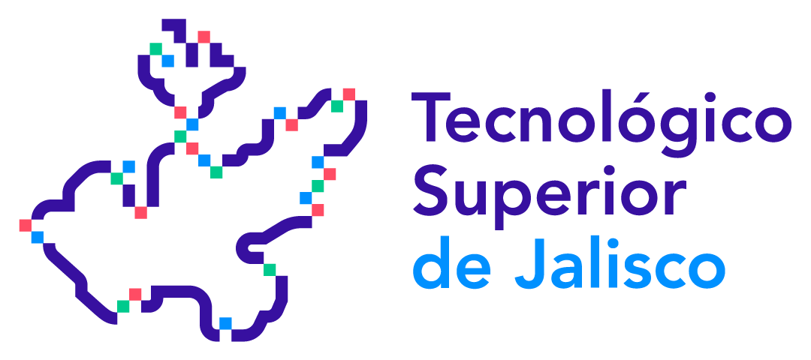

Cargando...
📍 Explorar Campus ▼
Cargando Escena...
Por favor espera mientras se inicializa el visor 360°.
🔊
Voz / Opciones
Asistente Virtual TECMM
✕
¡Hola! ¿Qué edificio o área del campus deseas visitar? Puedes presionar la Barra Espaciadora para hablarme.
Enviar
💬
Asistente Virtual